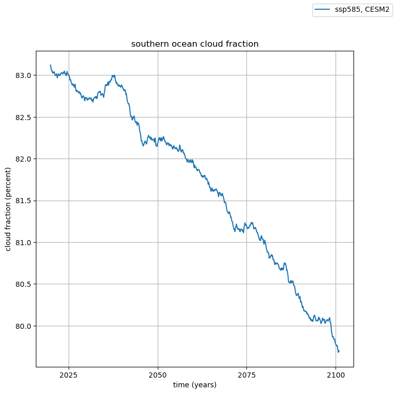
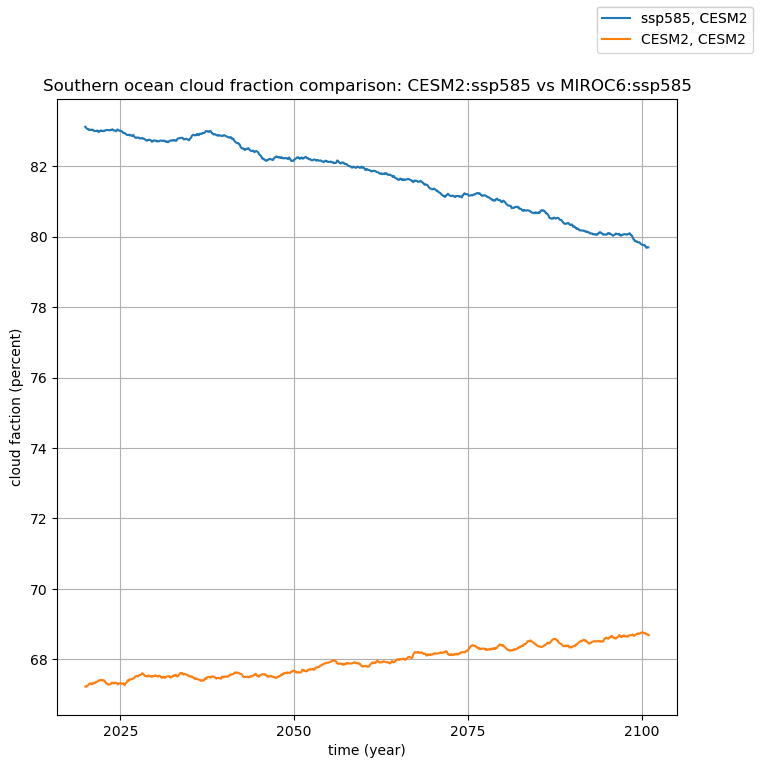
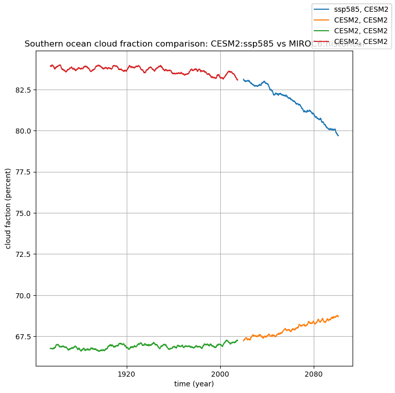

Worksheet: Comparing total cloud fraction in hot and cold models#
This notebook is motivated by Zelinka et al., 2020 which includes a supplementary table S1 that lists the equilibrium climate senitivity for 27 CMIP6 models.
They find that differences in southern ocean low cloud amount can explain much of the climate sensitivity differences. Below we ask you to compare southern ocean cloud fraction for a high and low climate sensitivity model run.
Below we compare the total cloud fraction clt for CESM2 (NCAR) and MIROC6 (Japan)
Things to note in this notebook
limiting the dataset to the Sourthern Ocean without reading the data
Find the area weighted cloud fraction for 1 dataset over the southern ocean
Bottom line: These two models have very different ideas about the cloud fraction over the Southern Ocean
import intake
import xarray
Load the catalog#
At import time, intake-esm plugin is available in intake’s registry as
esm_datastore and can be accessed with intake.open_esm_datastore() function.
Use the intake_esm.tutorial.get_url() method to access smaller subsetted catalogs for tutorial purposes.
import intake_esm
# url ="https://raw.githubusercontent.com/NCAR/intake-esm-datastore/main/catalogs/pangeo-cmip6.json"
url_official = "https://storage.googleapis.com/cmip6/pangeo-cmip6.json"
cat = intake.open_esm_datastore(url_official)
cat.df
| activity_id | institution_id | source_id | experiment_id | member_id | table_id | variable_id | grid_label | zstore | dcpp_init_year | version | |
|---|---|---|---|---|---|---|---|---|---|---|---|
| 0 | HighResMIP | CMCC | CMCC-CM2-HR4 | highresSST-present | r1i1p1f1 | Amon | ps | gn | gs://cmip6/CMIP6/HighResMIP/CMCC/CMCC-CM2-HR4/... | NaN | 20170706 |
| 1 | HighResMIP | CMCC | CMCC-CM2-HR4 | highresSST-present | r1i1p1f1 | Amon | rsds | gn | gs://cmip6/CMIP6/HighResMIP/CMCC/CMCC-CM2-HR4/... | NaN | 20170706 |
| 2 | HighResMIP | CMCC | CMCC-CM2-HR4 | highresSST-present | r1i1p1f1 | Amon | rlus | gn | gs://cmip6/CMIP6/HighResMIP/CMCC/CMCC-CM2-HR4/... | NaN | 20170706 |
| 3 | HighResMIP | CMCC | CMCC-CM2-HR4 | highresSST-present | r1i1p1f1 | Amon | rlds | gn | gs://cmip6/CMIP6/HighResMIP/CMCC/CMCC-CM2-HR4/... | NaN | 20170706 |
| 4 | HighResMIP | CMCC | CMCC-CM2-HR4 | highresSST-present | r1i1p1f1 | Amon | psl | gn | gs://cmip6/CMIP6/HighResMIP/CMCC/CMCC-CM2-HR4/... | NaN | 20170706 |
| ... | ... | ... | ... | ... | ... | ... | ... | ... | ... | ... | ... |
| 514813 | CMIP | EC-Earth-Consortium | EC-Earth3-Veg | historical | r1i1p1f1 | Amon | tas | gr | gs://cmip6/CMIP6/CMIP/EC-Earth-Consortium/EC-E... | NaN | 20211207 |
| 514814 | CMIP | EC-Earth-Consortium | EC-Earth3-Veg | historical | r1i1p1f1 | Amon | tauu | gr | gs://cmip6/CMIP6/CMIP/EC-Earth-Consortium/EC-E... | NaN | 20211207 |
| 514815 | CMIP | EC-Earth-Consortium | EC-Earth3-Veg | historical | r1i1p1f1 | Amon | hur | gr | gs://cmip6/CMIP6/CMIP/EC-Earth-Consortium/EC-E... | NaN | 20211207 |
| 514816 | CMIP | EC-Earth-Consortium | EC-Earth3-Veg | historical | r1i1p1f1 | Amon | hus | gr | gs://cmip6/CMIP6/CMIP/EC-Earth-Consortium/EC-E... | NaN | 20211207 |
| 514817 | CMIP | EC-Earth-Consortium | EC-Earth3-Veg | historical | r1i1p1f1 | Amon | tauv | gr | gs://cmip6/CMIP6/CMIP/EC-Earth-Consortium/EC-E... | NaN | 20211207 |
514818 rows × 11 columns
The summary above tells us that this catalog contains 514818 data assets. We can get more information on the individual data assets contained in the catalog by looking at the underlying pandas dataframe created when we load the catalog:
cat.df
| activity_id | institution_id | source_id | experiment_id | member_id | table_id | variable_id | grid_label | zstore | dcpp_init_year | version | |
|---|---|---|---|---|---|---|---|---|---|---|---|
| 0 | HighResMIP | CMCC | CMCC-CM2-HR4 | highresSST-present | r1i1p1f1 | Amon | ps | gn | gs://cmip6/CMIP6/HighResMIP/CMCC/CMCC-CM2-HR4/... | NaN | 20170706 |
| 1 | HighResMIP | CMCC | CMCC-CM2-HR4 | highresSST-present | r1i1p1f1 | Amon | rsds | gn | gs://cmip6/CMIP6/HighResMIP/CMCC/CMCC-CM2-HR4/... | NaN | 20170706 |
| 2 | HighResMIP | CMCC | CMCC-CM2-HR4 | highresSST-present | r1i1p1f1 | Amon | rlus | gn | gs://cmip6/CMIP6/HighResMIP/CMCC/CMCC-CM2-HR4/... | NaN | 20170706 |
| 3 | HighResMIP | CMCC | CMCC-CM2-HR4 | highresSST-present | r1i1p1f1 | Amon | rlds | gn | gs://cmip6/CMIP6/HighResMIP/CMCC/CMCC-CM2-HR4/... | NaN | 20170706 |
| 4 | HighResMIP | CMCC | CMCC-CM2-HR4 | highresSST-present | r1i1p1f1 | Amon | psl | gn | gs://cmip6/CMIP6/HighResMIP/CMCC/CMCC-CM2-HR4/... | NaN | 20170706 |
| ... | ... | ... | ... | ... | ... | ... | ... | ... | ... | ... | ... |
| 514813 | CMIP | EC-Earth-Consortium | EC-Earth3-Veg | historical | r1i1p1f1 | Amon | tas | gr | gs://cmip6/CMIP6/CMIP/EC-Earth-Consortium/EC-E... | NaN | 20211207 |
| 514814 | CMIP | EC-Earth-Consortium | EC-Earth3-Veg | historical | r1i1p1f1 | Amon | tauu | gr | gs://cmip6/CMIP6/CMIP/EC-Earth-Consortium/EC-E... | NaN | 20211207 |
| 514815 | CMIP | EC-Earth-Consortium | EC-Earth3-Veg | historical | r1i1p1f1 | Amon | hur | gr | gs://cmip6/CMIP6/CMIP/EC-Earth-Consortium/EC-E... | NaN | 20211207 |
| 514816 | CMIP | EC-Earth-Consortium | EC-Earth3-Veg | historical | r1i1p1f1 | Amon | hus | gr | gs://cmip6/CMIP6/CMIP/EC-Earth-Consortium/EC-E... | NaN | 20211207 |
| 514817 | CMIP | EC-Earth-Consortium | EC-Earth3-Veg | historical | r1i1p1f1 | Amon | tauv | gr | gs://cmip6/CMIP6/CMIP/EC-Earth-Consortium/EC-E... | NaN | 20211207 |
514818 rows × 11 columns
The first data asset listed in the catalog contains:
the surace pressure (variable_id=’ps’), as a function of latitude, longitude, time,
the high resolution version of the CMCC climate model (source_id=’CMCC-CM2-HR4’),
the high resolution model intercomparison expermenet (experiment_id=’HighResMIP’),
developed by the Euro-Mediterranean Centre on Climate Change (instution_id=’CMCC’),
run as part of the Coupled Model Intercomparison Project (activity_id=’CMIP’)
And is located in Google Cloud Storage at ‘gs://cmip6/CMIP6/HighResMIP/CMCC/CMCC-CM2-HR4/highresSST-present/r1i1p1f1/Amon/ps/gn/v20170706/”
Finding unique entries#
To get unique values for given columns in the catalog, intake-esm provides a
unique() method:
Let’s query the data catalog to see what models(source_id), experiments
(experiment_id) and temporal frequencies (table_id) are available.
unique = cat.unique()
unique
activity_id [HighResMIP, CMIP, CFMIP, ScenarioMIP, AerChem...
institution_id [CMCC, EC-Earth-Consortium, MOHC, ECMWF, NOAA-...
source_id [CMCC-CM2-HR4, EC-Earth3P-HR, HadGEM3-GC31-MM,...
experiment_id [highresSST-present, piControl, control-1950, ...
member_id [r1i1p1f1, r1i3p1f1, r1i2p1f1, r1i1p1f2, r2i1p...
table_id [Amon, 6hrPlev, 3hr, day, EmonZ, E3hr, 6hrPlev...
variable_id [ps, rsds, rlus, rlds, psl, hurs, huss, hus, h...
grid_label [gn, gr, gr1, grz, gr2, gr2z, gr1z, gr3, gm, gnz]
zstore [gs://cmip6/CMIP6/HighResMIP/CMCC/CMCC-CM2-HR4...
dcpp_init_year [1920.0, 1992.0, 2007.0, 2006.0, 2008.0, 1968....
version [20170706, 20170811, 20170818, 20170831, 20170...
derived_variable_id []
dtype: object
unique['source_id'].sort()
unique['source_id'][:10]
['ACCESS-CM2',
'ACCESS-ESM1-5',
'AWI-CM-1-1-MR',
'AWI-ESM-1-1-LR',
'BCC-CSM2-HR',
'BCC-CSM2-MR',
'BCC-ESM1',
'CAMS-CSM1-0',
'CAS-ESM2-0',
'CESM1-1-CAM5-CMIP5']
experiments = unique['experiment_id']
experiments.sort()
experiments[:10]
['1pctCO2',
'1pctCO2-4xext',
'1pctCO2-bgc',
'1pctCO2-cdr',
'1pctCO2-rad',
'1pctCO2to4x-withism',
'abrupt-0p5xCO2',
'abrupt-2xCO2',
'abrupt-4xCO2',
'abrupt-solm4p']
unique['table_id'][:10]
['Amon',
'6hrPlev',
'3hr',
'day',
'EmonZ',
'E3hr',
'6hrPlevPt',
'AERmon',
'LImon',
'CFmon']
Q1: find a low and a high climate sensitivity model#
For the low sensitivity, I’ll use MIROC6, ECS = 2.6 K/doubling, for the high sensitivity, CESM2, ECS = 5.15 K/doubling
Q2: cloud fraction#
Check the variable list at https://pcmdi.llnl.gov/mips/cmip3/variableList.html#overview
What is the difference between cl and clt? What table do they belong to?
These are both monthly averaged atmospheric variables in the table Amon – clt is averaged over height and is 3 dimensional (time, lon, lat) while cl is four dimensional (time, height, lon, lat)
Q3 Grab one realization from each of your two models for two scenarios: historical and ssp585#
First we need to find the available realizations. To do this, get every realization by leaving “member_id” unspecified. Note that there are 50 realization for the historical runs
cat_subset = cat.search(
experiment_id=["historical","ssp585"],
table_id=["Amon","fx"],
source_id = ["CESM2","MIROC6"],
variable_id=["clt","areacella"],
grid_label="gn")
cat_subset.df.tail()
| activity_id | institution_id | source_id | experiment_id | member_id | table_id | variable_id | grid_label | zstore | dcpp_init_year | version | |
|---|---|---|---|---|---|---|---|---|---|---|---|
| 223 | ScenarioMIP | MIROC | MIROC6 | ssp585 | r49i1p1f1 | fx | areacella | gn | gs://cmip6/CMIP6/ScenarioMIP/MIROC/MIROC6/ssp5... | NaN | 20200623 |
| 224 | ScenarioMIP | MIROC | MIROC6 | ssp585 | r10i1p1f1 | fx | areacella | gn | gs://cmip6/CMIP6/ScenarioMIP/MIROC/MIROC6/ssp5... | NaN | 20200623 |
| 225 | ScenarioMIP | MIROC | MIROC6 | ssp585 | r15i1p1f1 | Amon | clt | gn | gs://cmip6/CMIP6/ScenarioMIP/MIROC/MIROC6/ssp5... | NaN | 20200623 |
| 226 | ScenarioMIP | MIROC | MIROC6 | ssp585 | r14i1p1f1 | fx | areacella | gn | gs://cmip6/CMIP6/ScenarioMIP/MIROC/MIROC6/ssp5... | NaN | 20200623 |
| 227 | ScenarioMIP | MIROC | MIROC6 | ssp585 | r16i1p1f1 | Amon | clt | gn | gs://cmip6/CMIP6/ScenarioMIP/MIROC/MIROC6/ssp5... | NaN | 20200623 |
Now sort by member_id to get a common realization – everyone has member_id = “r10i1p1f1”
cat_subset.search(experiment_id = ["historical","ssp585"],source_id=["CESM2","MIROC6"]).df.sort_values("member_id").head()
| activity_id | institution_id | source_id | experiment_id | member_id | table_id | variable_id | grid_label | zstore | dcpp_init_year | version | |
|---|---|---|---|---|---|---|---|---|---|---|---|
| 23 | CMIP | MIROC | MIROC6 | historical | r10i1p1f1 | fx | areacella | gn | gs://cmip6/CMIP6/CMIP/MIROC/MIROC6/historical/... | NaN | 20190311 |
| 130 | ScenarioMIP | NCAR | CESM2 | ssp585 | r10i1p1f1 | fx | areacella | gn | gs://cmip6/CMIP6/ScenarioMIP/NCAR/CESM2/ssp585... | NaN | 20200528 |
| 133 | ScenarioMIP | NCAR | CESM2 | ssp585 | r10i1p1f1 | Amon | clt | gn | gs://cmip6/CMIP6/ScenarioMIP/NCAR/CESM2/ssp585... | NaN | 20200528 |
| 38 | CMIP | NCAR | CESM2 | historical | r10i1p1f1 | fx | areacella | gn | gs://cmip6/CMIP6/CMIP/NCAR/CESM2/historical/r1... | NaN | 20190313 |
| 39 | CMIP | NCAR | CESM2 | historical | r10i1p1f1 | Amon | clt | gn | gs://cmip6/CMIP6/CMIP/NCAR/CESM2/historical/r1... | NaN | 20190313 |
So grab these four realizations, plus the areacella weights for each of them.
single_realization = cat_subset.search(experiment_id = ["historical","ssp585"],source_id=["CESM2","MIROC6"],member_id = "r10i1p1f1")
single_realization.df
| activity_id | institution_id | source_id | experiment_id | member_id | table_id | variable_id | grid_label | zstore | dcpp_init_year | version | |
|---|---|---|---|---|---|---|---|---|---|---|---|
| 0 | CMIP | MIROC | MIROC6 | historical | r10i1p1f1 | fx | areacella | gn | gs://cmip6/CMIP6/CMIP/MIROC/MIROC6/historical/... | NaN | 20190311 |
| 1 | CMIP | MIROC | MIROC6 | historical | r10i1p1f1 | Amon | clt | gn | gs://cmip6/CMIP6/CMIP/MIROC/MIROC6/historical/... | NaN | 20190311 |
| 2 | CMIP | NCAR | CESM2 | historical | r10i1p1f1 | fx | areacella | gn | gs://cmip6/CMIP6/CMIP/NCAR/CESM2/historical/r1... | NaN | 20190313 |
| 3 | CMIP | NCAR | CESM2 | historical | r10i1p1f1 | Amon | clt | gn | gs://cmip6/CMIP6/CMIP/NCAR/CESM2/historical/r1... | NaN | 20190313 |
| 4 | ScenarioMIP | NCAR | CESM2 | ssp585 | r10i1p1f1 | fx | areacella | gn | gs://cmip6/CMIP6/ScenarioMIP/NCAR/CESM2/ssp585... | NaN | 20200528 |
| 5 | ScenarioMIP | NCAR | CESM2 | ssp585 | r10i1p1f1 | Amon | clt | gn | gs://cmip6/CMIP6/ScenarioMIP/NCAR/CESM2/ssp585... | NaN | 20200528 |
| 6 | ScenarioMIP | MIROC | MIROC6 | ssp585 | r10i1p1f1 | Amon | clt | gn | gs://cmip6/CMIP6/ScenarioMIP/MIROC/MIROC6/ssp5... | NaN | 20200623 |
| 7 | ScenarioMIP | MIROC | MIROC6 | ssp585 | r10i1p1f1 | fx | areacella | gn | gs://cmip6/CMIP6/ScenarioMIP/MIROC/MIROC6/ssp5... | NaN | 20200623 |
lazy-loading datasets by row#
We can use xarray.open_dataset to read in the metadata from a google store zstore url. This can take a few seconds, but it’s “lazy” in the sense that no data is read until some calculation (a plot, average, etc.) is conducted. If you want to force a data read, use xarray.load_dataset
# get aeracella for miroc6 historical r10i1p1f1
ds = xarray.open_zarr(single_realization.df.iloc[0]['zstore'])
ds
<xarray.Dataset> Size: 140kB
Dimensions: (lat: 128, lon: 256, bnds: 2)
Coordinates:
* lat (lat) float64 1kB -88.93 -87.54 -86.14 ... 86.14 87.54 88.93
lat_bnds (lat, bnds) float64 2kB dask.array<chunksize=(128, 2), meta=np.ndarray>
* lon (lon) float64 2kB 0.0 1.406 2.812 4.219 ... 355.8 357.2 358.6
lon_bnds (lon, bnds) float64 4kB dask.array<chunksize=(256, 2), meta=np.ndarray>
Dimensions without coordinates: bnds
Data variables:
areacella (lat, lon) float32 131kB dask.array<chunksize=(128, 256), meta=np.ndarray>
Attributes: (12/46)
Conventions: CF-1.7 CMIP-6.2
activity_id: CMIP
branch_method: standard
branch_time_in_child: 0.0
branch_time_in_parent: 98616.0
cmor_version: 3.3.2
... ...
tracking_id: hdl:21.14100/5b836094-432c-43f5-9671-dc34ea1e831d
variable_id: areacella
variant_label: r10i1p1f1
status: 2019-10-25;created;by nhn2@columbia.edu
netcdf_tracking_ids: hdl:21.14100/5b836094-432c-43f5-9671-dc34ea1e831d
version_id: v20190311Load datasets using to_dataset_dict()#
Intake-esm implements convenience utilities for loading the query results into
higher level xarray datasets. The logic for merging/concatenating the query
results into higher level xarray datasets is provided in the input JSON file and
is available under .aggregation_info property of the catalog:
cat.esmcat.aggregation_control
AggregationControl(variable_column_name='variable_id', groupby_attrs=['activity_id', 'institution_id', 'source_id', 'experiment_id', 'table_id', 'grid_label'], aggregations=[Aggregation(type=<AggregationType.union: 'union'>, attribute_name='variable_id', options={}), Aggregation(type=<AggregationType.join_new: 'join_new'>, attribute_name='member_id', options={'coords': 'minimal', 'compat': 'override'}), Aggregation(type=<AggregationType.join_new: 'join_new'>, attribute_name='dcpp_init_year', options={'coords': 'minimal', 'compat': 'override'})])
The purpose of aggregation control is to combine variable datasets from the same table_id into a single dataset if possible.
Get the 8 datasets (this is a lazy operation)#
The following command reads in the consolidated metadata, but doesn’t grab any actual data. The data reads will occur later when you make select operations.
The advantage of using to_dataset_dict over the raw open_zarr is that this this produces a dictionary with
keys that mark the institution, model, scenario, table an grid.
dset_dict = single_realization.to_dataset_dict(
xarray_open_kwargs={"consolidated": True, "decode_times": True, "use_cftime": True}
)
--> The keys in the returned dictionary of datasets are constructed as follows:
'activity_id.institution_id.source_id.experiment_id.table_id.grid_label'
dset_dict.keys()
dict_keys(['ScenarioMIP.NCAR.CESM2.ssp585.fx.gn', 'CMIP.NCAR.CESM2.historical.fx.gn', 'ScenarioMIP.MIROC.MIROC6.ssp585.fx.gn', 'ScenarioMIP.MIROC.MIROC6.ssp585.Amon.gn', 'CMIP.NCAR.CESM2.historical.Amon.gn', 'CMIP.MIROC.MIROC6.historical.fx.gn', 'CMIP.MIROC.MIROC6.historical.Amon.gn', 'ScenarioMIP.NCAR.CESM2.ssp585.Amon.gn'])
Keep track of the areacella for each dataset#
To keep track of the variables and weights, it helps to have the keys in two sorted lists
fx_keys = [key for key in dset_dict.keys() if key.find('fx') > -1]
cl_keys = [key for key in dset_dict.keys() if key.find('Amon') > -1]
fx_keys.sort()
cl_keys.sort()
fx_keys, cl_keys
(['CMIP.MIROC.MIROC6.historical.fx.gn',
'CMIP.NCAR.CESM2.historical.fx.gn',
'ScenarioMIP.MIROC.MIROC6.ssp585.fx.gn',
'ScenarioMIP.NCAR.CESM2.ssp585.fx.gn'],
['CMIP.MIROC.MIROC6.historical.Amon.gn',
'CMIP.NCAR.CESM2.historical.Amon.gn',
'ScenarioMIP.MIROC.MIROC6.ssp585.Amon.gn',
'ScenarioMIP.NCAR.CESM2.ssp585.Amon.gn'])
limiting the dataset to the Sourthern Ocean without reading the data#
To fetch the minimum amount of data, you can use xarray.isel to describe a slice that will be applied when a calculation is done.
def get_so(the_ds):
"""
slice the dataset for latitudes south of -30 degrees
"""
#
# logical index of all latitudes south of -30
#
hit = the_ds.lat < -30
so_slice = the_ds.isel(indexers = {'lat':hit})
return so_slice
This reduces the latitude dimension size from 128 to 43, so your file size is 1/3 of the full dataset size
for key, ds in dset_dict.items():
dset_dict[key]=get_so(ds)
saving a checkpoint#
You might want to load the dataset into memory (be careful) and save to disk for future acesss. You can preview how much space you’ll need with xarray.dataset.nbytes
The cell below shows how to checkpoint the datasets to disk and restore from disk back to a dictionary
readit = True
write_files = False
out_dir = home /"cmip6_files"
out_dir.mkdir(exist_ok=True,parents=True)
filenames=['cesm2_ssp585.nc','cesm2_historicial.nc','miroc6_ssp585.nc','miroc6_historical.nc']
dataset_names =['ScenarioMIP.NCAR.CESM2.ssp585.Amon.gn',
'CMIP.NCAR.CESM2.historical.Amon.gn',
'ScenarioMIP.MIROC.MIROC6.ssp585.Amon.gn',
'CMIP.MIROC.MIROC6.historical.Amon.gn']
if readit:
#
# download over the internet
#
dset_dict = single_realization.to_dataset_dict(
xarray_open_kwargs={"consolidated": True, "decode_times": True, "use_cftime": True}
)
if write_files:
for ds, filename in zip(dset_dict.values(),filenames):
out_file = out_dir / filename
print(f"writing {out_file}")
ds.to_netcdf(out_file)
else:
#
# read from a diskfile
#
dset_dict = dict()
dset_dict[dataset_name]=xr.open_dataset(the_file)
Find the area weighted cloud fraction for 1 dataset over the southern ocean#
Note that I don’t need a long variable name that includes all the metadata, I can get that information at any point from the variable itself
ds = dset_dict['ScenarioMIP.NCAR.CESM2.ssp585.Amon.gn']
weights = dset_dict['ScenarioMIP.NCAR.CESM2.ssp585.fx.gn']['areacella']
print(f"{ds.experiment_id=}, {ds.member_id.data[0]=}, {ds.source_id=}")
ds
ds.experiment_id='ssp585', ds.member_id.data[0]='r10i1p1f1', ds.source_id='CESM2'
<xarray.Dataset> Size: 76MB
Dimensions: (member_id: 1, dcpp_init_year: 1, time: 1032, lat: 64,
lon: 288, nbnd: 2)
Coordinates:
* lat (lat) float64 512B -90.0 -89.06 -88.12 ... -31.57 -30.63
lat_bnds (lat, nbnd) float64 1kB dask.array<chunksize=(64, 2), meta=np.ndarray>
* lon (lon) float64 2kB 0.0 1.25 2.5 3.75 ... 356.2 357.5 358.8
lon_bnds (lon, nbnd) float64 5kB dask.array<chunksize=(288, 2), meta=np.ndarray>
* time (time) object 8kB 2015-01-15 12:00:00 ... 2100-12-15 12:0...
time_bnds (time, nbnd) object 17kB dask.array<chunksize=(1032, 2), meta=np.ndarray>
* member_id (member_id) object 8B 'r10i1p1f1'
* dcpp_init_year (dcpp_init_year) float64 8B nan
Dimensions without coordinates: nbnd
Data variables:
clt (member_id, dcpp_init_year, time, lat, lon) float32 76MB dask.array<chunksize=(1, 1, 322, 64, 288), meta=np.ndarray>
Attributes: (12/61)
Conventions: CF-1.7 CMIP-6.2
activity_id: ScenarioMIP
branch_method: standard
branch_time_in_child: 735110.0
branch_time_in_parent: 735110.0
case_id: 1733
... ...
intake_esm_attrs:variable_id: clt
intake_esm_attrs:grid_label: gn
intake_esm_attrs:zstore: gs://cmip6/CMIP6/ScenarioMIP/NCAR/CESM2...
intake_esm_attrs:version: 20200528
intake_esm_attrs:_data_format_: zarr
intake_esm_dataset_key: ScenarioMIP.NCAR.CESM2.ssp585.Amon.gnThe areacella weights#
We’re on a sphere, so every latitude band is going to have grid cells with different areas. The grid size will vary between models, so it’s important to do weighted averages.
weights
<xarray.DataArray 'areacella' (member_id: 1, dcpp_init_year: 1, lat: 64,
lon: 288)> Size: 74kB
dask.array<getitem, shape=(1, 1, 64, 288), dtype=float32, chunksize=(1, 1, 64, 288), chunktype=numpy.ndarray>
Coordinates:
* lat (lat) float64 512B -90.0 -89.06 -88.12 ... -31.57 -30.63
* lon (lon) float64 2kB 0.0 1.25 2.5 3.75 ... 356.2 357.5 358.8
* member_id (member_id) object 8B 'r10i1p1f1'
* dcpp_init_year (dcpp_init_year) float64 8B nan
Attributes: (12/17)
cell_methods: area: sum
comment: AREA[0,:,:]
description: Cell areas for any grid used to report atmospheric variab...
frequency: fx
id: areacella
long_name: Grid-Cell Area for Atmospheric Grid Variables
... ...
time_label: None
time_title: No temporal dimensions ... fixed field
title: Grid-Cell Area for Atmospheric Grid Variables
type: real
units: m2
variable_id: areacellasqueeze out the unit dimensions#
Our variables come indexed over member id and starting year, but since we only have 1 member_id and 1 starting year, we can squeeze those out
ds['clt'].shape
(1, 1, 1032, 64, 288)
ds = ds.squeeze()
weights = weights.squeeze()
use the weighted method to apply weights to the average#
The dataArray.weighted method makes a dataArray “weight aware”. You want to make sure you copy this weighted dataArray to a new variable, because it wipes out all of the dataArray metadata
Add weights to the dataArray#
clt_so = ds['clt']
clt_so = ds['clt'].weighted(weights)
clt_so
DataArrayWeighted with weights along dimensions: lat, lon
Take the zonal mean#
Note that this is the first statement that actually fetches variable values from google
clt_so_zonal = clt_so.mean(dim=["lon","lat"])
clt_so_zonal
<xarray.DataArray 'clt' (time: 1032)> Size: 4kB
dask.array<truediv, shape=(1032,), dtype=float32, chunksize=(322,), chunktype=numpy.ndarray>
Coordinates:
* time (time) object 8kB 2015-01-15 12:00:00 ... 2100-12-15 12:0...
member_id <U9 36B 'r10i1p1f1'
dcpp_init_year float64 8B nanSmooth the data with a rolling window#
https://docs.xarray.dev/en/stable/user-guide/computation.html#rolling-window-operations
In the cell below I use a 5-year running mean to remove shorter-timescale flucuations. Note how I include the metadata in the title for a legend entry.
from matplotlib import pyplot as plt
rolling = clt_so_zonal.rolling(time=60)
clt_mean = rolling.mean()
fig, ax = plt.subplots(1,1,figsize=(8,8))
clt_mean.plot(ax=ax,label = f"{ds.experiment_id}, {ds.source_id}")
ax.grid(True)
ax.set(title="southern ocean cloud fraction",
xlabel="time (years)", ylabel = "cloud fraction (percent)")
fig.legend();

now add miroc6#
Make a function so we don’t need to copy/paste sells
def make_average(ds, weights):
ds = ds.squeeze()
weights = weights.squeeze()
clt_so_weighted = ds['clt'].weighted(weights)
clt_so_zonal = clt_so_weighted.mean(dim=["lon","lat"])
rolling = clt_so_zonal.rolling(time=60)
clt_mean = rolling.mean()
return clt_mean
add the miroc 5 year rolling mean to the plot#
looks like, for these realizations, there’s a pretty dramatic difference between the hot and cold models
ds_miroc =dset_dict['ScenarioMIP.MIROC.MIROC6.ssp585.Amon.gn']
weights_miroc = dset_dict['ScenarioMIP.MIROC.MIROC6.ssp585.fx.gn']['areacella']
miroc6_clt_mean = make_average(ds_miroc, weights_miroc)
miroc6_clt_mean.plot(ax=ax,label = f"{ds.source_id}, {ds.source_id}")
ax.set(title = (f"Southern ocean cloud fraction comparison: "
f"{ds.source_id}:{ds.experiment_id} vs "
f"{ds_miroc.source_id}:{ds_miroc.experiment_id}"),
xlabel = "time (year)", ylabel = "cloud faction (percent)")
fig.legend()
display(fig)

Historical runs#
dset_dict.keys()
dict_keys(['ScenarioMIP.NCAR.CESM2.ssp585.fx.gn', 'CMIP.NCAR.CESM2.historical.fx.gn', 'ScenarioMIP.MIROC.MIROC6.ssp585.fx.gn', 'ScenarioMIP.MIROC.MIROC6.ssp585.Amon.gn', 'CMIP.NCAR.CESM2.historical.Amon.gn', 'CMIP.MIROC.MIROC6.historical.fx.gn', 'CMIP.MIROC.MIROC6.historical.Amon.gn', 'ScenarioMIP.NCAR.CESM2.ssp585.Amon.gn'])
ds_miroc =dset_dict['CMIP.MIROC.MIROC6.historical.Amon.gn']
weights_miroc = dset_dict['CMIP.MIROC.MIROC6.historical.fx.gn']['areacella']
miroc6_clt_mean = make_average(ds_miroc, weights_miroc)
miroc6_clt_mean.plot(ax=ax,label = f"{ds.source_id}, {ds.source_id}")
ds_cesm =dset_dict['CMIP.NCAR.CESM2.historical.Amon.gn']
weights_cesm = dset_dict['CMIP.NCAR.CESM2.historical.fx.gn']['areacella']
cesm_clt_mean = make_average(ds_cesm, weights_cesm)
cesm_clt_mean.plot(ax=ax,label = f"{ds.source_id}, {ds.source_id}")
ax.set(title = (f"Southern ocean cloud fraction comparison: "
f"{ds.source_id}:{ds.experiment_id} vs "
f"{ds_miroc.source_id}:{ds_miroc.experiment_id}"),
xlabel = "time (year)", ylabel = "cloud faction (percent)")
fig.legend()
display(fig)
